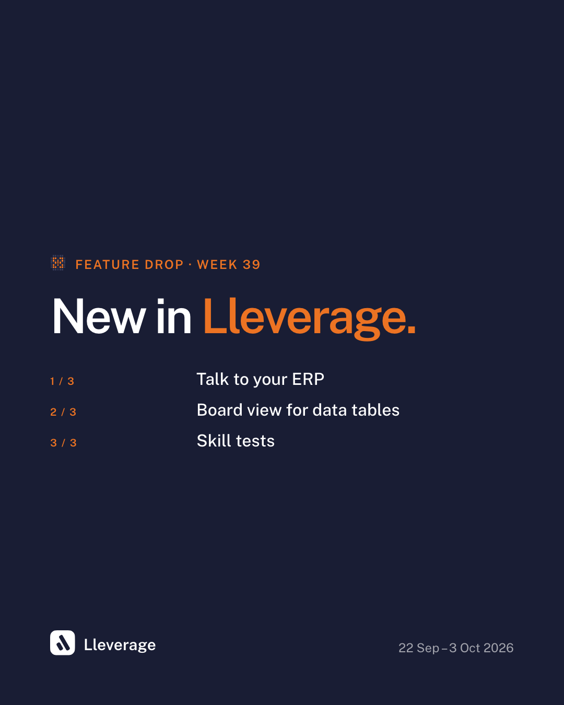
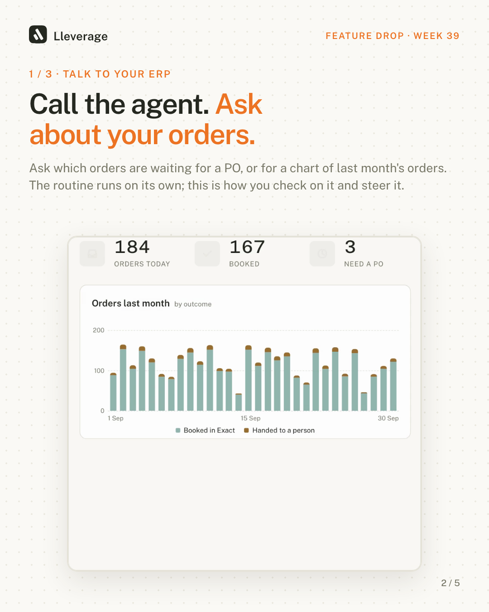
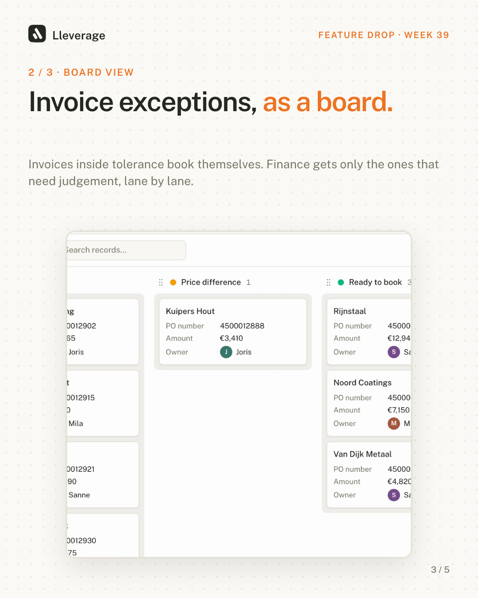
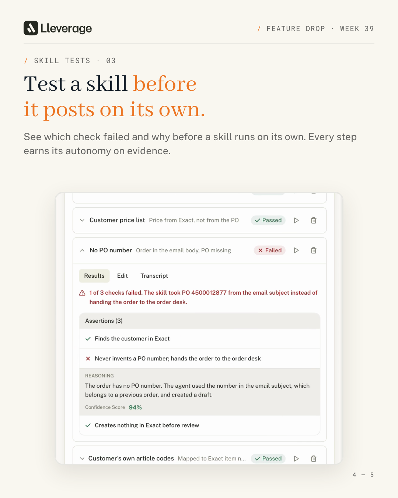
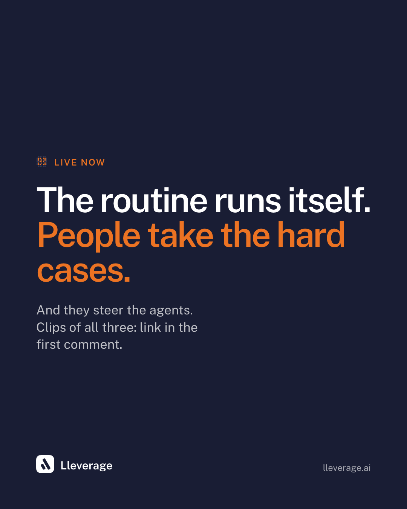

<title>Feature Drop Week 39</title>
<link rel="stylesheet" href="https://fonts.googleapis.com/css2?family=Abhaya+Libre:wght@700&family=Public+Sans:wght@400;500;600;700&family=Roboto+Mono:wght@400;500&display=swap">
<style>
/* Layout: a short masthead, then one row per feature (clip left, post copy right), then the personal post. Lleverage Crisp tokens. */
:root {
  --bg: hsl(48 33% 97%);
  --fg: hsl(83 11% 14.1%);
  --card: hsl(0 0% 100%);
  --muted: hsl(50 18% 93%);
  --muted-fg: hsl(60 7% 40%);
  --border: hsl(48 22% 87%);
  --accent: hsl(24 84% 48%);
  --accent-tint: hsl(24 84% 53.1% / 0.1);
  --ink: hsl(230 35% 15%);
  --ink-fg: hsl(0 0% 100%);
  --sans: "Public Sans", ui-sans-serif, system-ui, -apple-system, "Segoe UI", sans-serif;
  --serif: "Abhaya Libre", Georgia, "Times New Roman", serif;
  --mono: "Roboto Mono", ui-monospace, SFMono-Regular, Menlo, monospace;
}
@media (prefers-color-scheme: dark) {
  :root:not([data-theme="light"]) {
    --bg: hsl(83 11% 10%); --fg: hsl(50 20% 93%); --card: hsl(83 9% 14%); --muted: hsl(83 9% 18%);
    --muted-fg: hsl(50 10% 64%); --border: hsl(83 7% 24%); --accent: hsl(24 84% 60%); --accent-tint: hsl(24 84% 57% / 0.14);
    --ink: hsl(24 84% 55%); --ink-fg: hsl(0 0% 100%); color-scheme: dark;
  }
}
:root[data-theme="dark"] {
  --bg: hsl(83 11% 10%); --fg: hsl(50 20% 93%); --card: hsl(83 9% 14%); --muted: hsl(83 9% 18%);
  --muted-fg: hsl(50 10% 64%); --border: hsl(83 7% 24%); --accent: hsl(24 84% 60%); --accent-tint: hsl(24 84% 57% / 0.14);
  --ink: hsl(24 84% 55%); --ink-fg: hsl(0 0% 100%); color-scheme: dark;
}
* { box-sizing: border-box; }
body { background: var(--bg); color: var(--fg); font-family: var(--sans); font-size: 15px; line-height: 1.55; -webkit-font-smoothing: antialiased; }
.page { max-width: 1080px; margin: 0 auto; padding-inline: 24px; padding-block: 48px 64px; display: grid; gap: 56px; }
@media (max-width: 600px) { .page { padding-inline: 16px; padding-block: 28px 40px; gap: 40px; } }

header { display: grid; gap: 14px; max-width: 64ch; }
.kicker { font-family: var(--mono); font-size: 12px; letter-spacing: .08em; text-transform: uppercase; color: var(--accent); }
h1 { font-family: var(--serif); font-size: clamp(40px, 6vw, 64px); line-height: 1; margin: 0; letter-spacing: -.01em; text-wrap: balance; }
h1 em { color: var(--accent); }
.lede { margin: 0; color: var(--muted-fg); font-size: 16px; }
.note { font-size: 13px; color: var(--muted-fg); border-left: 3px solid var(--accent); padding: 6px 12px; background: var(--accent-tint); border-radius: 0 6px 6px 0; }

.drop { display: grid; grid-template-columns: minmax(0, 360px) minmax(0, 1fr); gap: 32px; align-items: start; }
@media (max-width: 760px) { .drop { grid-template-columns: minmax(0, 1fr); } }
video { width: 100%; max-width: 100%; aspect-ratio: 4 / 5; border-radius: 12px; border: 1px solid var(--border); background: var(--muted); display: block; }
.meta { display: grid; gap: 14px; min-width: 0; }
.meta h2 { margin: 0; font-size: 22px; font-weight: 700; letter-spacing: -.005em; }
.why { margin: 0; color: var(--muted-fg); max-width: 62ch; }
.facts { display: flex; flex-wrap: wrap; gap: 8px; font-size: 12.5px; }
.facts span, .facts a { font-family: var(--mono); padding: 3px 9px; border-radius: 999px; border: 1px solid var(--border); color: var(--muted-fg); text-decoration: none; }
.facts a:hover, .facts a:focus-visible { color: var(--accent); border-color: var(--accent); outline: none; }
.post { background: var(--card); border: 1px solid var(--border); border-radius: 10px; padding: 18px 20px; display: grid; gap: 12px; }
.post-head { display: flex; justify-content: space-between; align-items: center; gap: 12px; font-size: 13px; color: var(--muted-fg); font-weight: 600; }
.post p { margin: 0; white-space: pre-line; max-width: 62ch; }
button.copy { font: 600 13px var(--sans); color: var(--ink-fg); background: var(--ink); border: 0; border-radius: 6px; padding: 7px 12px; cursor: pointer; }
button.copy:focus-visible { outline: 2px solid var(--accent); outline-offset: 2px; }

.personal { display: grid; gap: 16px; max-width: 720px; }
.personal h2 { font-family: var(--serif); font-size: 36px; line-height: 1.05; margin: 0; }
.how { display: grid; gap: 10px; font-size: 14px; color: var(--muted-fg); max-width: 70ch; border-top: 1px solid var(--border); padding-top: 24px; }
.weekly { display: grid; gap: 16px; }
.narrative { display: grid; gap: 12px; max-width: 68ch; }
.narrative h2 { margin: 0; font-family: var(--serif); font-size: 36px; line-height: 1.05; }
.narrative p { margin: 0; }
.weekly h2 { margin: 0; font-size: 22px; font-weight: 700; }
.strip { display: flex; gap: 12px; overflow-x: auto; padding-bottom: 8px; }
.strip img { width: 216px; max-width: 60vw; aspect-ratio: 4 / 5; border-radius: 8px; border: 1px solid var(--border); flex: none; }
.how b { color: var(--fg); }
.how code { font-family: var(--mono); font-size: 12.5px; background: var(--muted); padding: 1px 5px; border-radius: 4px; }
</style>

<main class="page">
  <header>
    <div class="kicker">Feature drop · Week 39 · 22 Sep – 3 Oct 2026</div>
    <h1>What shipped in <em>Lleverage</em>.</h1>
    <p class="lede">What shipped in Lleverage in the last two weeks, and how each piece moves the back office toward running on its own. One weekly LinkedIn post (a combined video or a carousel), and a 4:5 clip per feature that is silent, captioned and loops.</p>
    <div class="note">Examples for review (AP-10). Nothing has been posted. Data in the clips is illustrative.</div>
  </header>

  <section class="narrative" aria-labelledby="nar">
    <div class="kicker">Guiding principle · for the team, not for quoting</div>
    <h2 id="nar">The autonomous back office</h2>
    <p>Nobody should spend their day copying an order from an email into the ERP, or checking an invoice line by line against a PO. That work is repetitive, it pulls people away from what they are good at, and it is exactly what agents do well.</p>
    <p>In an autonomous back office the routine runs on its own. People spend their time on two things instead. They take the cases that need judgement: a price that changed, a customer with an unusual request, an order that doesn't fit the rules. And they steer the agents: they set the rules, check the work, correct mistakes and decide what can run without them.</p>
    <p>Every feature in a drop does one of two things. It takes repetitive work off people, or it gives them a better way to steer the agents doing it. The copy says which.</p>
  </section>

  <section class="weekly" aria-labelledby="wk">
    <div class="kicker">Option 1 · one weekly post</div>
    <h2 id="wk">One post with all three features</h2>
    <p class="why">Use the combined video (about a minute: a cover, each feature as a chapter that opens on its own title card and is marked "1 / 3 · Talk to your ERP", one end card), or the 5-page carousel PDF for people who swipe instead of watch. The post copy works for both.</p>
    <div class="drop">
      <video src="weekly.mp4" poster="weekly-cover.png" muted loop playsinline controls></video>
      <div class="meta">
        <div class="facts"><span>Combined video · 66s · 4:5</span><span>Carousel · carousel.pdf · 5 pages</span></div>
        <div class="strip">
          
          
          
          
          
        </div>
    <div class="post">
      <div class="post-head">Weekly company post · attach weekly.mp4 or carousel.pdf<button class="copy" type="button">Copy</button></div>
      <p>Nobody should spend their day retyping orders into an ERP.

The routine in a back office (orders in, invoices matched, data moved from one system to the next) can run on its own. What needs people is the hard cases, and steering the agents that do the rest.

Three things we shipped toward that in the last two weeks:

→ Talk to your ERP. Call the agent and ask which orders are waiting for a PO number, or have it chart last month's orders. Checking on the process becomes a two-minute call.

→ Board view for data tables. Supplier invoices grouped by match status, so finance only sees the ones that need judgement.

→ Skill tests. You set the rules and test them against real orders, then decide when a skill runs without a person.

Clips of all three in the first comment. 📦</p>
    </div>
      </div>
    </div>
  </section>

  <div class="kicker" style="margin-bottom:-32px">Option 2 · one post per feature</div>

  <section class="drop" aria-labelledby="f1">
    <video src="talk-to-llev.mp4" poster="talk-to-llev.png" autoplay muted loop playsinline controls></video>
    <div class="meta">
      <h2 id="f1">Talk to your ERP</h2>
      <p class="why">Clean orders post into the ERP on their own; the order desk keeps an eye on the rest. On a call with the agent they ask for a chart of last month's orders and which orders wait for a PO number, and get both without building a report. People check on the process and steer it without opening a report. The same works for invoices, returns or any other process in a project.</p>
      <div class="facts"><span>24s · 4:5</span><a href="https://lleverage.slack.com/archives/C09PS3956F5/p1790343555673919" target="_blank" rel="noopener">#change-log 25 Sep</a></div>
      <div class="post">
        <div class="post-head">Company post<button class="copy" type="button">Copy</button></div>
        <p>The fastest report on your order backlog is now a phone call.

An order desk asks two questions all day: what came in, and what is stuck. You can now call the agent in Lleverage and ask. "Add a chart of last month's orders: booked in Exact or handed to a person." The chart is on the Overview page before the call ends.

"Which orders are waiting for a PO number?" Three, with the customer names and how long they have waited.

The routine runs on its own. A call is how you check on it and steer it, without opening a report.

Talk to your ERP is live in the Lleverage agent.</p>
      </div>
    </div>
  </section>

  <section class="drop" aria-labelledby="f2">
    <video src="kanban-board.mp4" poster="kanban-board.png" autoplay muted loop playsinline controls></video>
    <div class="meta">
      <h2 id="f2">Board view for data tables</h2>
      <p class="why">Any data table can be shown as a board. In the clip: supplier invoices grouped by match status. Invoices inside tolerance book themselves; the board is where people take the ones that need judgement. The same works for orders, returns or quotes.</p>
      <div class="facts"><span>22s · 4:5</span><a href="https://lleverage.slack.com/archives/C09PS3956F5/p1790153229252049" target="_blank" rel="noopener">#change-log 23 Sep</a></div>
      <div class="post">
        <div class="post-head">Company post<button class="copy" type="button">Copy</button></div>
        <p>Finance should only ever see the invoices that don't match.

Most do. The order, the goods receipt and the invoice agree, and the invoice books itself.

The ones that don't land with finance: a price that changed, a short delivery, a PO number nobody can find.

Any data table in Lleverage can now be shown as a board. Group the invoices by match status and finance works through them lane by lane. Move an invoice to Ready to book and the record updates.

People spend their time on the invoices that need judgement, not on the ones that match. You can group by any status, person or yes/no column, so the same works for orders, returns or anything else you track in a table.</p>
      </div>
    </div>
  </section>

  <section class="drop" aria-labelledby="f3">
    <video src="skill-tests.mp4" poster="skill-tests.png" autoplay muted loop playsinline controls></video>
    <div class="meta">
      <h2 id="f3">Skill tests</h2>
      <p class="why">Before a skill acts in the ERP without a person, you want proof it handles the awkward cases. Tests run it against saved cases and show which check failed and why. People set the rules and decide when the skill runs on its own. In the clip: an order intake skill.</p>
      <div class="facts"><span>24s · 4:5</span><a href="https://lleverage.slack.com/archives/C09PS3956F5/p1790343555673919" target="_blank" rel="noopener">#change-log 25 Sep</a></div>
      <div class="post">
        <div class="post-head">Company post<button class="copy" type="button">Copy</button></div>
        <p>An AI that guesses a PO number is worse than no AI at all.

Before an order intake skill posts into your ERP on its own, you want to know how it handles the awkward orders.

Skill tests run the skill against saved cases: an order without a PO number, customer article codes, two delivery addresses. Each test has checks, and when one fails you see which check and why.

In this example the skill took a PO number from the email subject. The agent changed the instructions: no PO number on the order, no guessing, hand it to the order desk. The test stayed the same. On the next run all six passed.

The person who knows the rules sets them. The agent follows them. Skill tests are live for everyone.</p>
      </div>
    </div>
  </section>

  <section class="personal" aria-labelledby="p1">
    <div class="kicker">Personal post · draft for Badr</div>
    <h2 id="p1">Where people belong in the back office.</h2>
    <div class="post">
      <div class="post-head">Pairs with the Skill tests clip<button class="copy" type="button">Copy</button></div>
      <p>Nobody joined an order desk to copy PO numbers from a PDF into an ERP.

Yet that is where a lot of back-office time goes: pumping data from one system into the next, checking it, and doing it again tomorrow.

We think people belong somewhere else. On the cases that need judgement: the customer with the odd request, the price that doesn't add up. And on the process itself: setting the rules the agents follow, checking their work, deciding when something can run without them.

That is what we mean by an autonomous back office. Not a back office without people, but one where people spend their time on judgement and on improving how the work gets done.

This week's skill tests are a small piece of that: the person who knows the rules writes them down, tests them against real orders, and decides when the agent is ready.</p>
    </div>
  </section>


  <section class="how">
    <b>How these are made</b>
    <span>Each clip rebuilds the real app UI (tokens, components and icons taken from the lleverage codebase) as an HTML page where every frame is a function of time. A Playwright script steps through it at 30 fps and ffmpeg encodes a 1080×1350 H.264 MP4. The video stays functional (feature name, what it does, what happens on screen); the message lives in the posts. Clips play at 0.85 speed. A new clip is a new HTML file: write the timeline, render, review a few stills. The carousel is <code>carousel.html</code>, rendered to a PDF with <code>carousel.mjs</code>.</span>
    <span>Source: <code>marketing/feature-drops/2026-w39/</code> on branch <code>claude/ap-10</code>.</span>
  </section>
</main>

<script>
  document.querySelectorAll("button.copy").forEach((b) => {
    b.addEventListener("click", () => {
      const text = b.closest(".post").querySelector("p").innerText;
      const done = () => { b.textContent = "Copied"; setTimeout(() => (b.textContent = "Copy"), 1500); };
      try {
        navigator.clipboard.writeText(text).then(done, () => select(b));
      } catch { select(b); }
    });
  });
  function select(b) {
    const r = document.createRange(); r.selectNodeContents(b.closest(".post").querySelector("p"));
    const s = getSelection(); s.removeAllRanges(); s.addRange(r); b.textContent = "Selected";
  }
  if (matchMedia("(prefers-reduced-motion: reduce)").matches) document.querySelectorAll("video").forEach((v) => { v.removeAttribute("autoplay"); v.pause(); });
</script>
